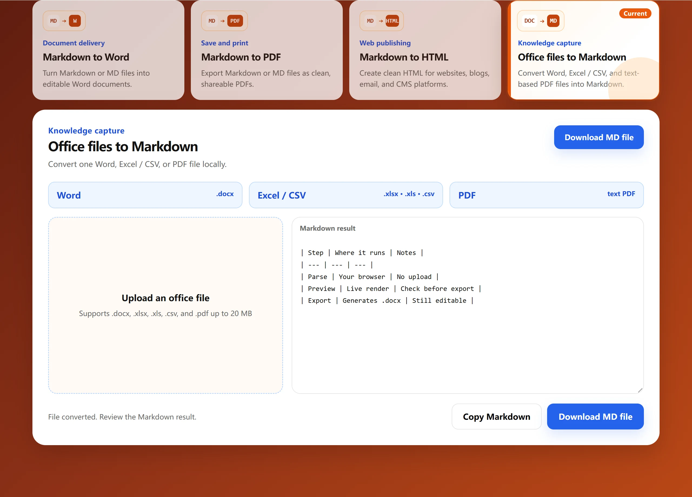

Table conversion guide
How do you convert Excel or CSV to Markdown?
Markdown tables are easier to edit and reuse than screenshots when moving spreadsheet data into README files, Notion, Obsidian, documentation, or AI prompts.

The quickest method
- Open the Excel / CSV to Markdown tool;
- Choose an
.xlsx,.xls, or.csvfile; - Select the worksheet when the workbook contains several sheets;
- Copy the Markdown or download a
.mdfile.
Prepare the spreadsheet
- Use short, unique column names in the first row;
- Remove empty rows and columns used only for visual spacing;
- Avoid merged cells, which Markdown tables do not support;
- Confirm formula results before conversion;
- Split extremely wide tables into smaller focused tables.
Why are pipe characters escaped?
Markdown uses | to separate cells. When a cell contains its own pipe, the converter adds a backslash so the table structure remains valid.
How do you fix CSV encoding?
Export the source as “CSV UTF-8” from Excel or another spreadsheet application. The downloaded Markdown file also uses UTF-8.
Where can you use the result?
The generated table works well in GitHub README files, technical documentation, Notion, Obsidian, knowledge bases, and AI workflows. For very large tables, keep only the rows and columns needed for the task.
What happens to a workbook with several sheets
Only one sheet is converted at a time. After upload, a sheet selector appears when the workbook holds more than one sheet, and the tool renders the first sheet by default. Switch sheets and convert again to capture the others.
Three things spreadsheets do that Markdown cannot
- Merged cells. A merged range keeps its value in the top-left cell only; the covered cells arrive empty, so merged headers often need to be repeated manually.
- Cell styling. Colours, borders and number formats are presentation, and Markdown tables carry none of them.
- Formulas. Only the calculated value is transferred, never the formula itself.
Which inputs work, and which do not
| Input | Supported | Note |
|---|---|---|
| .xlsx, .xls, .csv | Yes | Converted to a pipe table |
| .docx | Yes | Paragraphs and tables become Markdown |
| PDF with selectable text | Yes | Text layer must exist |
| Scanned or image-only PDF | No | Needs OCR before conversion |
| Legacy .doc | No | Save as .docx first |
Questions about spreadsheet conversion
Can I convert every sheet at once?
No. One sheet is converted per run: pick another sheet in the selector and convert again.
Why is my merged header incomplete?
A merged range stores its value in the top-left cell only, so the covered cells arrive empty and the header has to be repeated manually.
Does it work with a scanned PDF?
Not directly. A scanned PDF has no text layer, so it needs OCR before conversion.
If the table looks wrong
- The first row became the header instead of a real header. Markdown tables always treat the top row as the header, so a sheet without a header row produces a misleading table.
- Extra empty columns appear. The source sheet has formatting applied to unused cells; delete those columns and upload again.
- Numbers are left-aligned text. That is how the value was stored. Convert the column to a numeric format in the spreadsheet first.